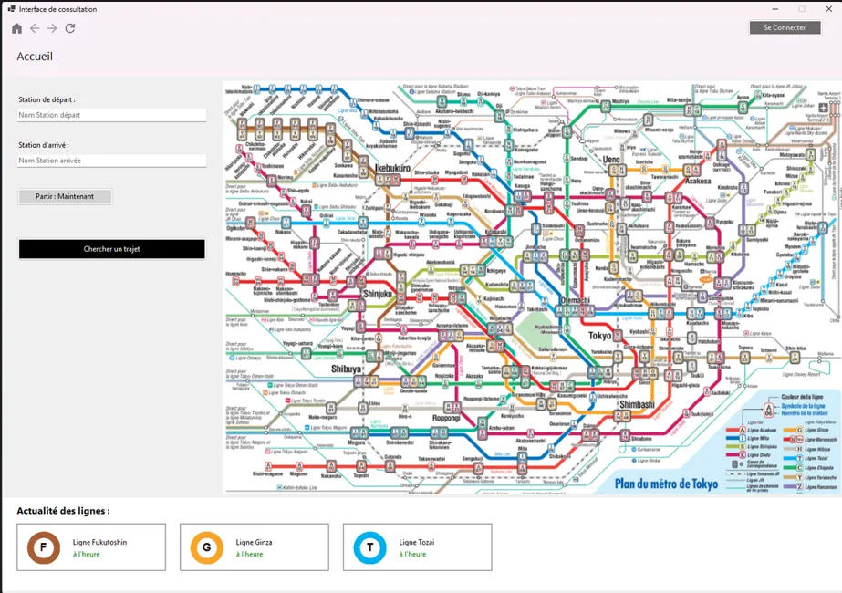
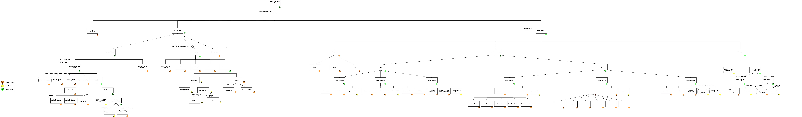

01 Le Défi du Labyrinthe Souterrain
Le réseau du métro de Tokyo est l'un des plus denses, tentaculaires et complexes au monde. Dans le cadre de notre SAE de semestre 2, on nous a lancé un défi fascinant : comment modéliser, gérer et optimiser informatiquement un tel monstre logistique ?
Ce projet n'était pas qu'un simple exercice de code, c'était une véritable plongée dans l'optimisation de ressources à grande échelle. L'objectif était de concevoir une application capable de gérer l'infrastructure, d'anticiper les temps de trajet (algorithme du plus court chemin) et d'assurer la maintenance du réseau, le tout en équipe.

02 Modélisation de la Base de Données
Avant de coder l'application, il fallait structurer les données d'un des réseaux les plus complexes au monde. Je me suis particulièrement investi dans cette phase de conception :
J'ai coréalisé le Schéma Entité-Association (MCD) sur le logiciel Looping, en définissant les dépendances fonctionnelles, le dictionnaire de données et le modèle relationnel final. Ce travail rigoureux a permis de générer un script SQL (MariaDB) robuste, capable de gérer les lignes, les tronçons, les stations, les horaires et la tarification sans aucune redondance d'information.

03 Développement de l'Application (C#)
L'étape suivante fut la création d'une application Desktop (Windows Forms) en architecture N-Tiers (Interface, Logique Métier, Accès BD) pour administrer ce réseau.
En tant que concepteur, j'ai élaboré l'arbre des tâches de l'application pour cartographier toutes les actions utilisateurs. J'ai également conseillé l'équipe sur la création des maquettes IHM interactives via Figma. L'application finale permettait aux administrateurs connectés de créer de nouvelles lignes, d'éditer des stations ou de calculer des itinéraires dynamiquement.

04 L'Innovation : Smart Tokyo Metro
Notre mission ne s'arrêtait pas à la gestion de l'existant. Nous devions proposer une innovation pour fluidifier le réseau. Après une analyse des faiblesses actuelles (complexité tarifaire, affluence monstre), nous avons conceptualisé Smart Tokyo Metro.
Il s'agit d'une application prédictive intégrant l'IA pour anticiper l'affluence en temps réel et proposer des itinéraires alternatifs ("Mode éviter la foule"). Nous avons poussé le concept jusqu'à l'estimation budgétaire de l'hébergement de cette solution sur des serveurs AWS EC2 (environ 4500€ à 6000€ par an) et son découpage en tâches de développement.

05 Gestion de Crise et Compétences Acquises
Gérer un tel volume d'informations a mis notre équipe à rude épreuve. Ce projet transversal m'a confronté pour la première fois aux réalités brutes du travail en groupe : problèmes de communication, disparités d'implication et pression des délais. Pour ne pas sombrer, nous avons dû imposer une tenue rigoureuse d'un journal de bord et structurer nos échanges sur GitHub et Google Drive. J'y ai appris qu'un bon logiciel repose d'abord sur une équipe soudée et une analyse des besoins rigoureuse.
Compétences validées
- Optimiser (Algorithmique) : Implémentation d'algorithmes de calcul du plus court chemin pour fluidifier le trafic des usagers.
- Gérer des données : Création d'une base de données complexe et parfaitement modélisée pour supporter les milliers de stations et de lignes.
- Collaborer (Travailler dans une équipe informatique) : Mise en place d'outils collaboratifs (GitHub), résolution de conflits internes et répartition équitable des tâches.